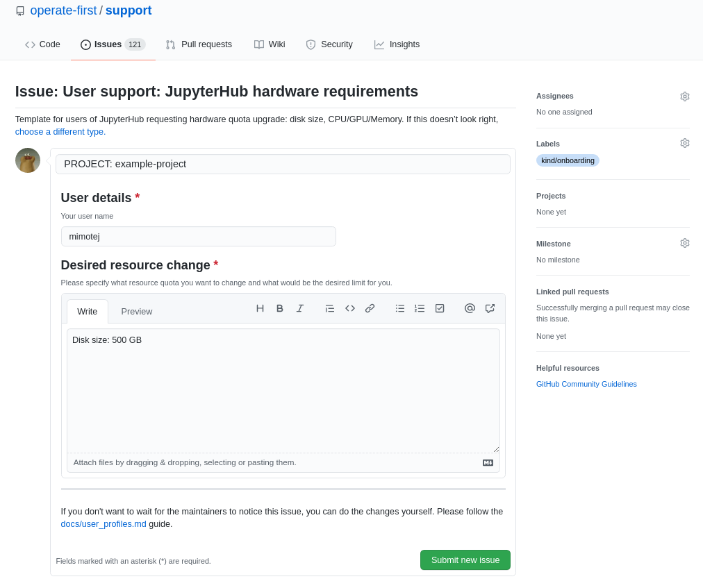

Increase size of a PVC in JupyterHub¶
This tutorial is used to show how you can increase the size of a PVC (persistent volume claim) in JupyterHub. The first part of this tutorial shows steps from the user’s perspective and the second from the operation’s perspective.
User¶
Note
Before creating an issue check if you meet the following requirements:
User of MOC-Zero
Access to JupyterHub on MOC-Zero
As a user, you can increase PVC size by creating JupyterHub hardware requirements issue to operate-first support repository. An example is shown in the picture below. 
Operation¶
Note
Before you start working on the request check if you meet the following requirements:
User of MOC-Zero
Access to JupyterHub on MOC-Zero
User (Requester) requested expansion of a PVC in operate-first/support/
Requester is a user of MOC-ZERO
Requester has access to JupyteHub on MOC-ZERO
Scenarios¶
When working on the requests, we can encounter two scenarios:
Requester uses the default PVC
Requester already has a custom PVC defined
Requester uses the default PVC¶
- Get pvc template file from blueprint/docs/userstories/jupyterhub/templates/pvc-template.yaml
- Update the highlighted information
- Encrypt file with SOPS
- Add the PVC resource to apps/kfdefs/overlays/moc/zero/opf-jupyterhub/pvcs/
following conventionuser-USERNAME-pvc.enc.yaml. - List the resource at apps/kfdefs/overlays/moc/zero/opf-jupyterhub/pvcs/secret-generator.yaml
- Commit updated files and create PR
- When PR is merged and changes are applied by ArgoCD restart requester's JupyterHub server
---
kind: PersistentVolumeClaim
apiVersion: v1
metadata:
annotations:
hub.jupyter.org/username: user@redhat.com
name: jupyterhub-nb-URLENCODED_USERNAME-pvc
labels:
app: jupyterhub
component: singleuser-storage
spec:
resources:
requests:
storage: DESIRED_SIZERequester already has a custom PVC defined¶
- Fetch user's PVC resource from apps/kfdefs/overlays/moc/zero/opf-jupyterhub/pvcs/
- Update storage size in file via SOPS
- Commit updated file and create PR
- When PR is merged and changes are applied by ArgoCD restart requester's JupyterHub server
storage: DESIRED_SIZE